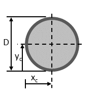

Beam section properties:
Equations and
Basic Theory
| Cross-section | Centroid | Area | Perimeter | Second moments of area | Polar moment of inertia |
Elastic modulus, x-axis, \(S_{x,min}\) \(\sigma=\frac{M_{x}c}{I_{xx}}=\frac{M_{x}}{S_{x}}\) |
Elastic modulus, y-axis, \(S_{y,min}\) \(\sigma=\frac{M_{y}c}{I_{yy}}=\frac{M_{y}}{S_{y}}\) |
|---|---|---|---|---|---|---|---|
| Circular  |
$$ {\begin{align}x_{c} &= D/2 \\y_{c} &= D/2\end{align}} $$ | $$ {A = \frac{\pi D^2}{4} = \pi R^2} $$ | $$ {\begin{align}P &= \pi D \\&= 2 \pi R\end{align}} $$ | $$ {\begin{align} I_{xx}&=\frac{\pi D^4}{64}=\frac{\pi R^4}{4} \\ I_{yy}&=I_{xx} \end{align}} $$ | $$ {\begin{align}I_{zz} &= I_{xx} + I_{yy} \\ &= \frac{\pi D^4}{32}=\frac{\pi R^4}{2}\end{align}} $$ | $$ {S_{x,min}=\frac{I_{xx}}{R}=\frac{\pi R^3}{4}} $$ | $$ {S_{y,min}=S_{x,min}} $$ |
| Circular tube |
$$ {\begin{align}x_{c} &= D/2 \\y_{c} &= D/2\end{align}} $$ | $$ {\begin{align}A &= \frac{\pi (D_{o}^2-D_{i}^2)}{4} \\&= \pi (R_{o}^2-R_{i}^2)\end{align}} $$ | $$ {\begin{align}P_{out} &= \pi D_{o} \\&= 2 \pi R_{o}\\P_{int} &= \pi D_{i} \\&= 2 \pi.R_{i}\end{align}} $$ | $$ {\begin{align}I_{xx}&=\frac{\pi (D_{o}^4-D_{i}^4)}{64}\\&=\frac{\pi (R_{o}^4-R_{i}^4)}{4} \\ I_{yy}&=I_{xx} \end{align}} $$ | $$ {\begin{align}I_{zz} &= I_{xx} + I_{yy} \\ &= \frac{\pi (D_{o}^4-D_{i}^4)}{32}\\&=\frac{\pi (R_{o}^4-R_{i}^4)}{2}\end{align}} $$ | $$ {\begin{align}S_{x,min}&=\frac{I_{xx}}{R}\\&=\frac{\pi (R_{o}^4-R_{i}^4)}{4R_{o}}\end{align}} $$ | $$ {S_{y,min}=S_{x,min}} $$ |
Rectangular |
$$ {\begin{align}x_{c} &= b/2 \\y_{c} &= h/2\end{align}} $$ | $$ {A = h b} $$ | $$ {P = 2 h + 2 b} $$ | $$ {\begin{align} I_{xx}&=\frac{bh^3}{12} \\ I_{yy}&=\frac{hb^3}{12} \end{align}} $$ | $$ {\begin{align}I_{zz} &= I_{xx} + I_{yy} \\ &= \frac{bh^3+hb^3}{12}\end{align}} $$ | $$ {S_{x,min}=\frac{I_{xx}}{h - y_{c}}=\frac{2 I_{xx}}{h}} $$ | $$ {S_{y,min}=\frac{I_{yy}}{b - x_{c}}=\frac{2 I_{yy}}{b}} $$ |
Rectangular tube $$ {\begin{align}h_{i} &= h-2t\\b_{i}&=b-2t\end{align}} $$ |
$$ {\begin{align}x_{c} &= b/2 \\y_{c} &= h/2\end{align}} $$ | $$ {\begin{align}A &= hb - h_{i}b_{i}\\A &= 2(h+b)t - 4t^2\end{align}} $$ | $$ {\begin{align}P_{out} &= 2 h + 2 b \\P_{int} &= 2(h+b)-8t\end{align}} $$ | $$ {\begin{align} I_{xx}&=\frac{bh^3-b_{i}h_{i}^3}{12} \\ I_{yy}&=\frac{hb^3-h_{i}b_{i}^3}{12} \end{align}} $$ | $$ {\begin{align}I_{zz} &= I_{xx} + I_{yy} \\ &=\frac{bh^3+hb^3-b_{i}h_{i}^3-h_{i}b_{i}^3}{12}\end{align}} $$ | $$ {S_{x,min}=\frac{I_{xx}}{h - y_{c}}=\frac{2 I_{xx}}{h}} $$ | $$ {S_{y,min}=\frac{I_{yy}}{b - x_{c}}=\frac{2 I_{yy}}{b}} $$ |
| L section |
$$ {\begin{align}x_{c} &= \frac{t}{2A}(b^2+ht-t^2) \\y_{c} &= \frac{t}{2A}(h^2+bt-t^2) \end{align}} $$ | $$ {A=(h+b)t-t^2} $$ | $$ {P = 2 h + 2 b} $$ | $$ {\begin{align} I_{xx}&=\frac{(bt^2+h^3-t^3)t}{3}-A y_{c}^2 \\ I_{yy}&=\frac{(ht^2+b^3-t^3)t}{3}-A x_{c}^2 \end{align}} $$ | $$ {I_{zz} = I_{xx} + I_{yy}} $$ | $$ {S_{x,min}=\frac{I_{xx}}{h - y_{c}}} $$ | $$ {S_{y,min}=\frac{I_{yy}}{b - x_{c}}} $$ |
C channel |
$$ {\begin{align}x_{c} &= \frac{1}{A}(\frac{t_{w}^2}{2}(h-2 t_f)+t_f b^2 ) \\y_{c} &= h/2\end{align}} $$ | $$ {A = 2 b t_f + (h-2 t_f)t_w} $$ | $$ {P = 4b+2h-2t_w} $$ | $$ {\begin{align} I_{xx}&=\frac{bh^3}{12} - \frac{(b-t_w)(h-2t_f)^3}{12} \\ I_{yy}&=\frac{(h-2t_f)t_{w}^3+2t_{f}b^3}{3} - A x_{c}^2 \end{align}} $$ | $$ {I_{zz} = I_{xx} + I_{yy}} $$ | $$ {S_{x,min}=\frac{I_{xx}}{h - y_{c}}=\frac{2 I_{xx}}{h}} $$ | $$ {S_{y,min}=\frac{I_{yy}}{b - x_{c}} } $$ |
U channel |
$$ {\begin{align}x_{c} &= b/2 \\ y_{c} &= \frac{1}{A}(\frac{t_{w}^2}{2}(b-2 t_f)+t_f h^2 ) \end{align}} $$ | $$ {A = 2 h t_f + (b-2 t_f)t_w} $$ | $$ {P = 4h+2b-2t_w} $$ | $$ {\begin{align} I_{xx}&=\frac{bh^3}{12} - \frac{(b-t_w)(h-2t_f)^3}{12} \\ I_{yy}&=\frac{(h-2t_f)t_{w}^3+2t_{f}b^3}{3} - A x_{c}^2 \end{align}} $$ | $$ {I_{zz} = I_{xx} + I_{yy}} $$ | $$ {S_{x,min}=\frac{I_{xx}}{h - y_{c}}=\frac{2 I_{xx}}{h}} $$ | $$ {S_{y,min}=\frac{I_{yy}}{b - x_{c}} } $$ |
I section |
$$ {\begin{align}x_{c} &= b/2 \\y_{c} &= h/2\end{align}} $$ | $$ {A = 2 b t_f + (h-2 t_f)t_w} $$ | $$ {P = 4b+2h-2t_w} $$ | $$ {\begin{align}I_{xx}&=\frac{bh^3}{12} - \frac{(b-t_w)(h-2t_f)^3}{12} \\ I_{yy}&=\frac{2 t_{f} b^3 + (h-2 t_{f}) t_{w}^3}{12}\end{align}} $$ | $$ {I_{zz} = I_{xx} + I_{yy}} $$ | $$ {S_{x,min}=\frac{I_{xx}}{h - y_{c}}=\frac{2 I_{xx}}{h}} $$ | $$ {S_{y,min}=\frac{I_{yy}}{b - x_{c}}=\frac{2 I_{yy}}{b} } $$ |
H section |
$$ {\begin{align}x_{c} &= b/2 \\y_{c} &= h/2\end{align}} $$ | $$ {A = 2 h t_f + (b-2 t_f)t_w} $$ | $$ {P = 4b+2h-2t_w} $$ | $$ {\begin{align} I_{xx}&=\frac{2 t_{f} b^3 + (b-2 t_{f}) t_{w}^3}{12} \\ I_{yy}&=\frac{hb^3}{12} - \frac{(h-t_w)(b-2t_f)^3}{12} \end{align}} $$ | $$ {I_{zz} = I_{xx} + I_{yy}} $$ | $$ {S_{x,min}=\frac{I_{xx}}{h - y_{c}}=\frac{2 I_{xx}}{h}} $$ | $$ {S_{y,min}=\frac{I_{yy}}{b - x_{c}}=\frac{2 I_{yy}}{b}} $$ |
T section |
$$ {\begin{align}x_{c} &= b/2 \\y_{c} &= h-\frac{1}{2A} (t_w h^2+(b-t_w)t_f^2) \end{align}} $$ | $$ {A = 2 b t_f + (h-t_f)t_w} $$ | $$ {P = 2b+2h} $$ | $$ {\begin{align} I_{xx}&=\frac{t_w b^3 + (b-2 t_{w}) t_{f}^3}{3}-A y_c^2 \\ I_{yy}&=\frac{(h-t_f)t_w^3 + t_f b^3}{12} \end{align}} $$ | $$ {I_{zz} = I_{xx} + I_{yy}} $$ | $$ {S_{x,min}=\frac{I_{xx}}{h - y_{c}}} $$ | $$ {S_{y,min}=\frac{I_{yy}}{b - x_{c}}=\frac{2 I_{yy}}{b}} $$ |
Basic Stress Theory
When a load is applied to a structural component, that component will develop stresses and strains as a result of that load. The most common types of loads are:
- Axial Forces;
- Shear Forces;
- Bending moments;
- Torsion moments (Torque);
The stresses developed from each of those loads can be summarized in the table below:
| Load type | Stress | ||
|---|---|---|---|
| Axial Force | Axial Stress | $$ {\sigma=\frac{F}{A}} $$ | where: - \(F\) is the axial force; - \(A\) is the cross-sectional area. |
| Bending moment, x-axis | Bending Stress | $$ {\sigma=\frac{M_{x}c_x}{I_{xx}}=\frac{M_{x}}{S_{x}}} $$ | where: - \(M_{x}\) is the bending moment around x-axis; - \(c_x\) is the distance between the centroidal axis and the outer surface; - \(I_{xx}\) is the cross-sectional area. - \(S_{x} = I_{xx}/c_x\) is the elastic modulus* of the cross-section. |
| Bending moment, y-axis | Bending Stress | $$ {\sigma=\frac{M_{y}c_y}{I_{yy}}=\frac{M_{y}}{S_{y}}} $$ | where: - \(M_{y}\) is the bending moment around y-axis; - \(c_y\) is the distance between the centroidal axis and the outer surface; - \(I_{yy}\) is the cross-sectional area. - \(S_{y} = I_{yy}/c_y\) is the elastic modulus* of the cross-section. |
| Shear Force | Transverse Shear Stress | $$ {\tau = \frac{V}{A}} $$ | where: - \(V\) is the transverse force; - \(A\) is the cross-sectional area. |
| Torsion | Torsional Stress | $$ {\tau = \frac{Tr}{I_{zz}}} $$ | where: - \(T\) is the torque; - \(r\) is the radius; - \(I_{zz}\) is the polar moment of inertia (also denoted as \(J\)). |
*The maximum bending stress \(\sigma_{max}\) is calculated where \(c_{x}\) or \(c_{y}\) has is maximum value, i.e. is the distance from the neutral axis to the most extreme fiber. Consequently, \(\sigma_{max}\) can be calculated where the elastic modulus, \(S_{x}\) or \(S_{y}\) has its minimum value. This implies that, under some simplifying assumptions, we can compare the bending response of each beam cross-section by comparing this single parameter, \(S_{x,min}\) or \(S_{y,min}\).
First Moment of Area
The first moment of area relates to the distribution of area with respect to some axis, and it can be calculated as:
\( Q_x = \int y \, dA \) or \( Q_y = \int x \, dA \).
The first moment of area can be used to calculate the shear stress at a given point in the cross-section:
$$ {\tau = \frac{VQ}{It}} $$
where \(V\) is the transverse shear force, \(Q\) is the first moment of area about the neutral axis x for a particular web section of the cross-section, \(t\) is the thickness of a particular web section of the cross-section at the point being measured, \(I\) is the second moment of area about the neutral axis for the entire cross-section.
Second Moment of Area or Moment of Inertia
The second moment of area, sometimes called moment of inertia, can be calculated as:
\( I_{xx} = \int\int y^2 \, dA \) or \( I_{yy} = \int\int x^2 \, dA \).
The moments of inertia are usually calculated with respect to the section's centroid, and used to evaluate the structural member response to bending moments.
To compute the moments of inertia of complex shapes, it can be usefull to refer to the parallel axis theorem:
$$ { I_{o'} = I_{o}+Ad^2 } $$
where \(I_{o}\) is the moment of inertia about the \(o\)-axis, \(I_{o'}\) is the moment of inertia about the \(o'\)-axis, \(A\) is the cross-sectional area and \(d\) is the distance between both axes.
Polar Moment of Inertia
The polar moment of inertia, \( I_{zz}\) or \(J\), can be used to calculate the structural bember response when a torsion load is applied about an axis (usually through the centroid of the cross-section), an can be calculated as:
$$ {\begin{align}J &= \int\int r^2 \, dA = \int\int (x^2+y^2) \, dxdy \\ \\
J &= I_{zz} = I_{xx} +I_{yy} \end{align}} $$
References
© 2021 All Rights Reserved. Terms of use and Privacy Policy